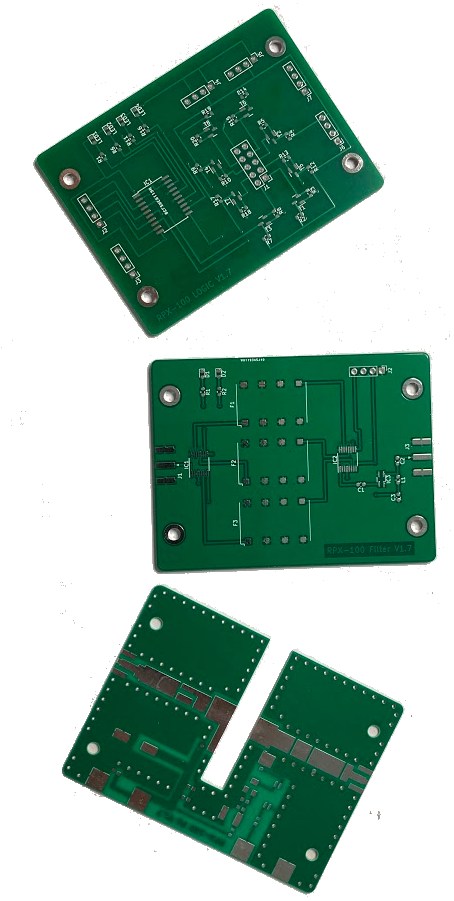
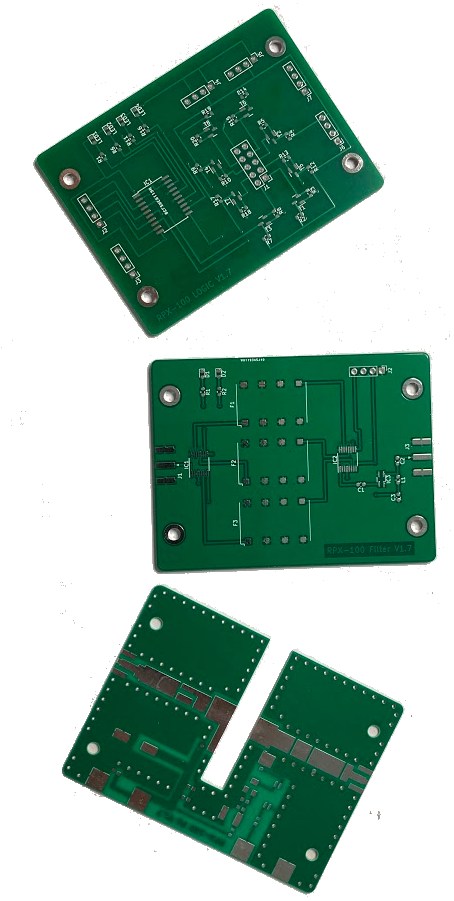
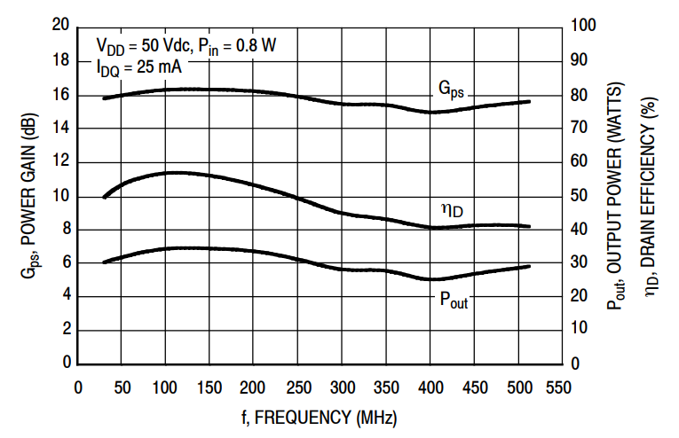

The Austrian Amateur Radio Society (ÖVSV) establsihes a
new Open SDR Platform for digital transmission allowing high speed data communication in Sub-GHz
Frequency bands.
Requirements are to use a wideband transmission mode to support state of the art bandwidth for each user, and
to enable multiple users at the same time to connect to a base station providing access to HAMNET.
The RPX-100 Kit is based on the concept of a software defined radio using commercial available
hardware and open source software. This addresses and motivates a larger community of developers and radio
amateurs.
Hardware and software are designed as kit, the
RPX-100,
which allows a modular use and supports all possible Sub-GHz frequency bands.
The Institute of Telecommunications of TU-Wien has
successfully requested a permit to test operation of such a new digital communication system at 52-54MHz in
the
6m band.
Multi user access is achieved by using OFDMA as channel access methodology based on IEEE 802.22 (WRAN)
standard.
The project has been granted a funding from Amateur Radio
Digital Communications (ARDC) in March 2022 following anevaluation by an international Grants Advisory
Committee.


RPX-100 Transceiver Kit for Radio Amateurs
The RPX-100 is a modular kit for a software defined transceiver using standard embedded boards running linux
such as the Odroid C4.
 

Most common Software Defined Radios with USB interface are supported, testing was done with the LimeSDR mini. The Kit
includes a Radio Frontend with software
defined band pass filters and a calss A amplfier with output power of 10W and is designed with a form factor
to fit the board96 standard.
It is operated at 12V/48V to allow power supply via the build-in power unit or via an
external source. Interfaces such as GPIO, Disply Boards, etc. are available for optional add-ons such
as display, Microphone or buttons and keyboard. Alternatively a Raspberry Compute Module 4 or the Ordoid C4 can be used as embedded CPU.
 Schematic of RPX-100 modules V1.7:
Schematic of RPX-100 modules V1.7:
 Specifications V1.7:
Specifications V1.7:
- Supply Voltage 12V/48V for mobile operation or 220V with internal PSU.
- Software defined filters and Class A amplifier for 6m, 2m and 70cm Radio Amateur bands.
- Premaplifier with 24dBm and Class A power amplifier for 30 - 512 MHz with 10W (max. 30W): 
- Linux Operating System (Debian) enabling devlopers to write new sourcecode
- Optional extentions:
- 4.3 inch touch screen
- Internal speakers and microphone
- External microphon with PTT
- Native C++ software stack, using liquid-dsp libraries, no framework required.
 PCB Layout of RPX-100 modules V1.7:
PCB Layout of RPX-100 modules V1.7:

The concpet of the WRAN software uses the IEEE 802.22 frame structure for prototyping to make use of super
frames and preambles for cognitive channel management, which allows a dynamic resource allocation between
base stations, but also between multiple users at one base station. Orthogonal Frequency Division Multiple
Access (OFDMA) is used in the upper layers, as Modulation techniques QPSK, 16-QAM and 64-QAM is
supported.
The software will support a connection-oriented MAC layer with cognitive functionality for dynamic and
adaptive
scheduling and management of coexistence of base stations in the same time-frequency domain
(superframes). The software is written in C++ using liquid-dsp libraries and includes a WEB Waterfall Spectrum based on RFC
6455 to monitor HF activtiy remotley.
Project Milestones:
- The Institute of Telecommunications of TU Wien has been granted a test permit by the Federal Ministry of Agriculture, Regions and Tourism to test and operate the new transmission scheme at a 2 MHz Band from 52-54 MHz at 2 selected location in Austria. The permit has been extended for one year till May 2022.
- The IEEE 802.22 frame structure has been selected for prototyping the software and hardware to make use of super frames and preambles for cognitive channel management, which allows a dynamic resource allocation between base stations, but also between multiple users at one base station.
- The new hardware and software stack has been successfully tested using the Raspberry Compute Module CM4 in combination with LimeSDR mini. The advantages are a small form factor, performance and the 12V supply Voltage for mobile operation.
- A Radio Frontend has been developed and tested for VHF and UHF (6m, 2m and 70cm Band) with a design to fit as hat-board to the Raspberry CM4 IO board and operates with 12V supply voltage. The Output power can be regulated via software between 0 - 10W.